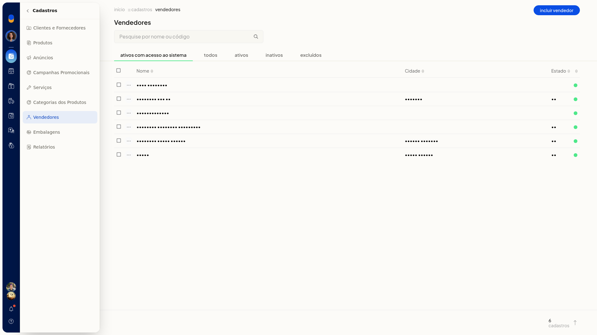

Alterar a senha de acesso de um vendedor
No ERP da Olist, o vendedor pode ter acesso ao sistema. Você altera a senha desse acesso na lista de vendedores, pela ação Alterar senha de acesso da linha do cadastro.
Instruções
- Acesse Cadastros > Vendedores. A lista abre na aba ativos com acesso ao sistema.

-
Localize o vendedor em Pesquise por nome ou código ou nas abas ativos com acesso ao sistema, todos, ativos, inativos e excluídos.
-
Abra o menu de contexto da linha do vendedor.

-
Clique em Alterar senha de acesso.